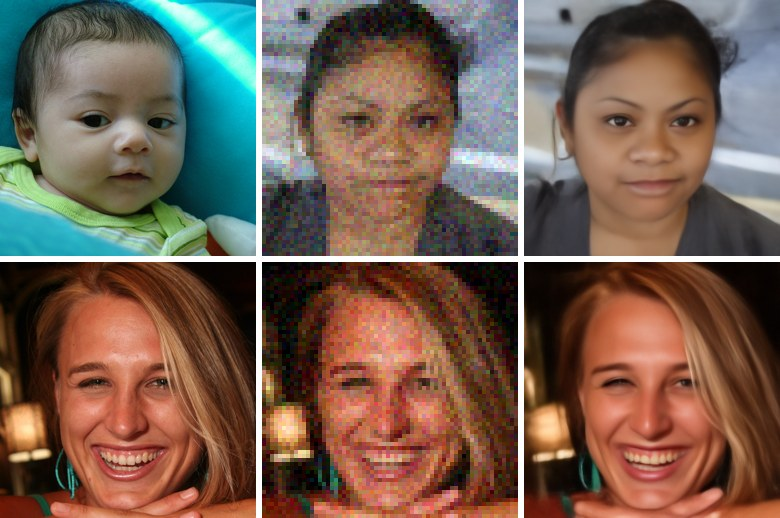
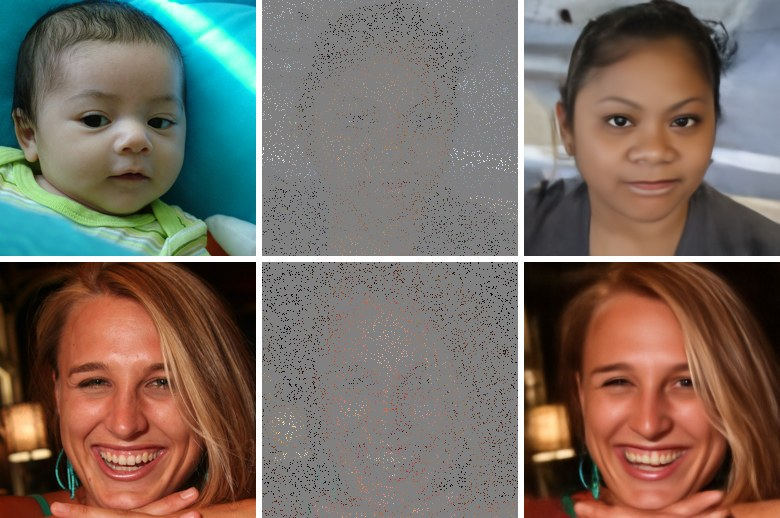

INFERENCE WALKTHROUGH / NOT A REPRODUCTION
三张图，
未知噪声那一档与论文最接近。
官方代码 + FFHQ 权重，4× SR 与 92% 缺失 inpainting 各三张图，每任务跑「已知 σ_y=0.05」与 --unknown_noise 两档。打开噪声自适应后 SR 从 27.49 升到 28.52 dB（LPIPS 0.329 → 0.276），与论文 FFHQ 的 27.29 / 0.770 / 0.291 很接近；inpainting 也同向提升。样本只有 3 张，不等同论文指标复现。
跑了什么
仓库 NA-HMC/NA-HMC @ 2a03d85（README 同时指向 Sunsett5/Noise-space-HMC，同一份代码），入口 main_sampling.py。权重 ffhq_10m.pt（README 的 gdown id，362 项 / 93,563,910 参数，与 configs/model_config_ffhq.yaml 的 128 通道一致）。
数据：从 HuggingFace merkol/ffhq-256 的第一个 parquet 分片（490 MB）抽出前 6 张 256² 图，存成 ImageFolder 需要的 ffhq/imgs/*.png（脚本 extract_ffhq.py）；每次跑前 3 张。全部默认超参：--timesteps 2（skip=375，750→0 两段 DDIM）、epsilon=0.05、L=20、seed=5678；随机 inpainting 丢弃 92% 像素，SR 为 4× 下采样 + 双三次核。
环境与改动
原作者 environment.yml 是 py3.8 + cu11.0 + torch 1.7，4090 上不可用；改为 python 3.10.22 + torch 2.1.2+cu118 + torchvision 0.16.2，pip 装 numpy<2 / scipy / Pillow / matplotlib / scikit-image / lpips / tqdm / pyyaml / opencv-headless / einops / gdown / pyarrow / pandas。
README 里的两条 sed 补丁没有应用、也不需要：torchvision 0.16.2 已无 torch._six 引用，torch 2.1 的 torch.load 默认 weights_only=False，lpips 自带权重可正常加载；site-packages 未被改动。无代码改动。
结果
| 任务（3 图均值） | 已知噪声 σ_y=0.05 | --unknown_noise | 论文 FFHQ 列 |
|---|---|---|---|
| SR 4× | 27.487 / 0.7500 / 0.3287 | 28.519 / 0.7886 / 0.2760 | 27.29 / 0.770 / 0.291 |
| 92% random inpainting | 27.686 / 0.7774 / 0.3065 | 28.316 / 0.8057 / 0.2594 | 26.72 / 0.785 / 0.268 |
顺序为 PSNR / SSIM / LPIPS。指标由仓库脚本自算：PSNR = 10log10(1/MSE)（图在 [0,1]），SSIM 的 data_range 取样本 max−min，LPIPS 用 vgg 主干。3 张图的小样本，不能与论文 100 张均值比较。
趋势与论文一致：打开噪声自适应后 SR +1.03 dB、LPIPS −0.053；inpainting +0.63 dB、LPIPS −0.047。论文的 NA-NHMC 正是噪声自适应版本，与本次 --unknown_noise 一档（28.52/0.789/0.276）很接近；已知噪声一档（27.49）落在论文同表 DPS 26.84 / SITCOM 27.35 的区间。
耗时与显存（4090 D 单卡）：单图 4–9 min（同卡并行时 247–531 s/迭代），每个组合 3 图 25–35 min，四个组合约 1.5 h；显存 4.5–6 GB/进程。
样例

--unknown_noise）：每行左起为 GT、伪逆 y0、最终样本。伪逆明显模糊，样本恢复了面部结构与纹理。
--unknown_noise）：伪逆几乎全黑，HMC 样本仍能恢复人脸结构，说明后验采样确实在起作用。没跑的部分与局限
- 只有 3 张图、2 个任务：未跑 SR 16×、各向异性高斯去模糊、非线性去模糊、相位恢复、HDR，也未跑 ImageNet。
- 指标实现与论文口径未对齐：SSIM 的
data_range取 max−min、LPIPS 用 vgg，需与论文核对后再横比。 - 残差判据没验证：论文 Corollary 1.1 说残差应 ≈ mσ_y²，本次没有逐样本算 ‖y − A(x̂₀)‖/√m 的分布。
- 无医学数据：FFHQ/ImageNet 自然图，复数域 MRI 与 CT 需要重做噪声调度。
文件位置
| 路径 | 内容 |
|---|---|
/data1/kxchen/infer-repro/nhmc/code | 官方代码 @ 2a03d85 |
.../out/{sr4,inpaint}_{known,unknown}/ | y0_*.png 伪逆与 {0,1,2}.png 样本 |
.../ckpt/ffhq_10m.pt | FFHQ 权重（374,417,833 B） |
.../extract_ffhq.py | 从 HF parquet 抽图的脚本 |
.../RECORD.md | 完整走查记录与数字出处 |
来源
- N-HMC 论文（arXiv:2604.16919，ICLR 2026）与官方仓库。
- 权重：README 的 gdown id；数据：HuggingFace merkol/ffhq-256。
- 本页数字全部来自
/data1/kxchen/infer-repro/nhmc/RECORD.md与out/。 - 明确声明：小样本推理走查，不等同论文指标。